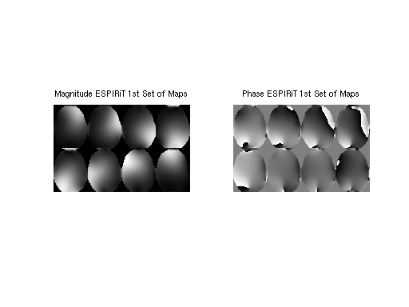
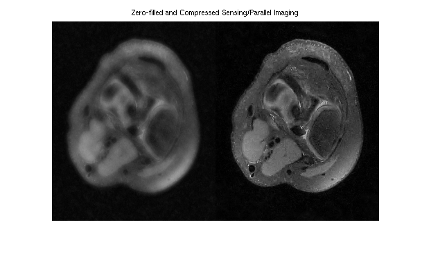

Contents
function examples
ESPIRiT examples (based on work by Sana Vaziri)
To begin, add '$(TOOLBOX_PATH)/matlab' to the library path. The environment variable TOOLBOX_PATH needs to be set to the base directory of the reconstruction tools package.
if isempty(getenv('TOOLBOX_PATH')) error('Environment variable TOOLBOX_PATH is not set.'); end addpath(strcat(getenv('TOOLBOX_PATH'), '/matlab'));
The input and output datasets are each stored in a pair of files: one header (.hdr) and one raw data (.cfl). All the data files used in this demo are in the data folder. The readcfl and writecfl Matlab methods can be found in $(TOOLBOX_PATH)/matlab and can be used to view and process the data and reconstructed images in Matlab.
Example 1: ESPIRiT reconstruction (R = 2x2)
The example uses ESPIRiT to obtain the image from 2x2 undersampled data.
A visualization of k-space data and sampling and zero-filled reconstruction
% sqrt sum-of-squares of k-space und2x2 = readcfl('data/und2x2'); ksp_rss = bart('rss 8', und2x2); % zero-filled reconstruction sqrt-sum-of-squares zf_coils = bart('fft -i 6', und2x2); zf_rss = bart('rss 8', zf_coils); ksp_rss = squeeze(ksp_rss); zf_coils = squeeze(zf_coils); zf_rss = squeeze(zf_rss); figure,subplot(1,2,1), imshow(abs(ksp_rss).^0.125, []); title('k-space') subplot(1,2,2), imshow(abs(zf_rss), []); title('zero-filled recon')
Show singular values of the calibration matrix
calmat = bart('calmat -r 20 -k 6', und2x2); [U SV VH] = bart('svd', calmat); figure, plot(SV); title('Singular Values of the Calibration Matrix');
ESPIRiT calibration (using a maximum calibration region of size 20)
[calib emaps] = bart('ecalib -r 20', und2x2);
Calibration region... (size: 1x20x20, pos: 0x105x80) Energy: 0.568 0.282 0.104 0.031 0.008 0.003 0.002 0.001 Build calibration matrix and SVD... Eigen decomposition... (size: 288) Using 56/288 kernels (19.44%, last SV: 0.031736). Zeropad... FFT (juggling)... Calculate Gram matrix... Resize... Point-wise eigen-decomposition... Crop maps... (0.80) Fix phase... Done.
Extraction of first set of maps (0-th subarray along dimension 4)
sens = bart('slice 4 0', calib); sens_maps = squeeze(sens); figure, subplot(121), imshow3(abs(sens_maps), [],[2,4]); title('Magnitude ESPIRiT 1st Set of Maps') subplot(122), imshow3(angle(sens_maps),[],[2,4]) title('Phase ESPIRiT 1st Set of Maps')
For comparison: Produce coil images from fully-sampled data using the fft command. It uses a bitmask as argument to specify the dimensions which are transformed. Here, the bitmask is 6 = 2^1 + 2^2 which corresponds to the dimensions 1 and 2.
full = readcfl('data/full'); coilimgs = bart('fft -i 6', full); coil_imgs = squeeze(coilimgs); figure, imshow3(abs(coil_imgs), [],[2,4]) title('Coil images')

Show eigenvalue maps
emaps = squeeze(emaps);
figure, imshow3(emaps, [], [1, 2]);
title('First Two Eigenvalue Maps')
SENSE reconstruction using ESPIRiT maps
reco = bart('sense', und2x2, sens); sense_recon = squeeze(reco); figure, imshow(abs(sense_recon), []); title('ESPIRiT Reconstruction')
Size: 41400 Samples: 10650 Acc: 3.89 Total Time: 0.594283
Evaluation of the coil sensitivities.
% % Computing error from projecting fully sampled error % onto the sensitivities. This can be done with one % iteration of POCSENSE. % proj = bart('pocsense -r 0. -i 1', full, sens); % Compute error and transform it into image domain and combine into a single map. errimgs = bart('fft -i 6', (full - proj)); errsos_espirit = bart('rss 8', errimgs); % % For comparison: compute sensitivities directly from the center. sens_direct = bart('caldir 20', und2x2); % Compute error map. proj = bart('pocsense -r 0. -i 1', full, sens_direct); errimgs = bart('fft -i 6', (full - proj)); errsos_direct = bart('rss 8', errimgs); errsos_espirit = squeeze(errsos_espirit); errsos_direct = squeeze(errsos_direct); figure, imshow(abs([errsos_direct errsos_espirit]), []); title('Projection Error (direct calibration vs ESPIRiT)');
Reconstruction... Done Done. Calibration region 1x20x20 Done. Reconstruction... Done Done.

Example 2: Reconstruction of undersampled data with small FOV.
This example uses a undersampled data set with a small FOV. The image reconstructed using ESPIRiT is compared to an image reconstructed with SENSE. By using two sets of maps, ESPIRiT can avoid the central artifact which appears in the SENSE reconstruction.
% Zero padding to make square voxels since resolution in x-y for this % data set is lower in phase-encode than readout smallfov = readcfl('data/smallfov'); smallfov = bart('resize -c 2 252', smallfov); % Direct calibration of the sensitivities from k-space center for SENSE sensemaps = bart('caldir 20', smallfov); % SENSE reconstruction sensereco = bart('sense -r0.01', smallfov, sensemaps); % ESPIRiT calibration with 2 maps to mitigate with aliasing in the calibration espiritmaps = bart('ecalib -r 20 -m 2', smallfov); % ESPIRiT reconstruction with 2 sets of maps espiritreco = bart('sense -r0.01', smallfov, espiritmaps); % Combination of the two ESPIRiT images using root of sum of squares espiritreco_rss = bart('rss 16', espiritreco); espirit_maps = squeeze(espiritmaps); figure, imshow3(abs(espirit_maps), [],[2,8]) title('The two sets of ESPIRiT maps')
Calibration region 1x20x20 Done. Size: 80640 Samples: 27167 Acc: 2.97 Total Time: 0.581754 Calibration region... (size: 1x20x20, pos: 0x150x116) Energy: 0.515 0.306 0.115 0.045 0.013 0.004 0.002 0.001 Build calibration matrix and SVD... Eigen decomposition... (size: 288) Using 73/288 kernels (25.35%, last SV: 0.034162). Zeropad... FFT (juggling)... Calculate Gram matrix... Resize... Point-wise eigen-decomposition... Crop maps... (0.80) Fix phase... Done. 2 maps. ESPIRiT reconstruction. Size: 80640 Samples: 27167 Acc: 2.97 Total Time: 0.791920 Warning: Image is too big to fit on screen; displaying at 50%

% SENSE image: reco1 = squeeze(sensereco); figure, subplot(1,2,1), imshow(abs(reco1), []) title('SENSE Reconstruction') % ESPIRiT image: reco2 = squeeze(espiritreco_rss); subplot(1,2,2), imshow(abs(reco2), []) title('ESPIRiT Reconstruction from 2 maps')
Example 3: Compressed Sensing and Parallel Imaging
This example demonstrates L1-ESPIRiT reconstruction of a human knee. Data has been acquired with variable-density poisson-disc sampling.
% A visualization of k-space data knee = readcfl('data/knee'); ksp_rss = bart('rss 8', knee); ksp_rss = squeeze(ksp_rss); figure, imshow(abs(ksp_rss).^0.125, []); title('k-space') % Root-of-sum-of-squares image knee_imgs = bart('fft -i 6', knee); knee_rss = bart('rss 8', knee_imgs); % ESPIRiT calibration (one map) knee_maps = bart('ecalib -c0. -m1', knee); % l1-regularized reconstruction (wavelet basis) knee_l1 = bart('sense -l1 -r0.005', knee, knee_maps); % Results knee_rss = knee_rss / 1.5E9; image = [ squeeze(knee_rss) squeeze(knee_l1) ]; figure, imshow(abs(image), []) title('Zero-filled and Compressed Sensing/Parallel Imaging')
Calibration region... (size: 1x24x24, pos: 0x132x106) Energy: 0.560 0.266 0.116 0.037 0.010 0.006 0.004 0.001 Build calibration matrix and SVD... Eigen decomposition... (size: 288) Using 61/288 kernels (21.18%, last SV: 0.032264). Zeropad... FFT (juggling)... Calculate Gram matrix... Resize... Point-wise eigen-decomposition... Crop maps... (0.00) Fix phase... Done. l1-wavelet regularization Size: 67968 Samples: 8082 Acc: 8.41 Total Time: 4.134167
Example 4: Basic Tools
Various tools are demonstrated by manipulating an image.
% Zero pad knee2 = bart('resize -c 1 300 2 300', knee_l1); % Switch dimensions 1 and 2 tmp = bart('transpose 1 2', knee2); % Scale by a factor of 0.5 tmp2 = bart('scale 0.5', tmp); % Join original and the transposed and scaled version along dimension 2. joined = bart('join 2', knee2, tmp2); % Flip 1st and 2nd dimension (2^1 + 2^2 = 6) tmp = bart('flip 6', joined); % Join flipped and original along dimension 1. big = bart('join 1', joined, tmp); % Extract sub-array tmp = bart('extract 1 150 449', big); small = bart('extract 2 150 449', tmp); % Circular shift by 115 pixels tmp = bart('circshift 1 150', small); shift = bart('circshift 2 150', tmp); % Show the final result. figure, imshow(abs(squeeze(shift)), []); % end global function
end